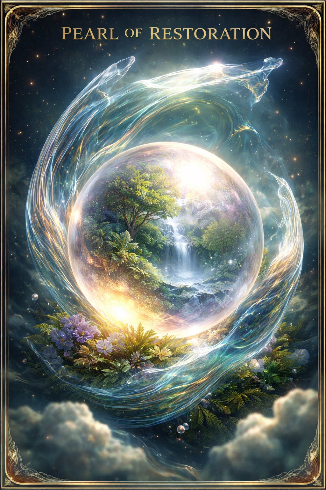

It seeps into groundwater. It burns into atmosphere. It ends up in the ocean. We have the technology to stop it — right now.
Nature has no word for waste.
Water evaporates — and returns as rain.
A pearl is born from a wound — through pressure, time, transformation.
Why should industry be any different?
Closed-loop technology — not an idea. A working reality.
Invest in the first facility. Earn a share of global scaling.

Every litre of industrial oil burned needlessly. Every tonne of organic waste buried in the ground. Every carbon molecule released without purpose. These are not inevitabilities — they are choices we can reverse.
Pearl of Restoration is a closed-loop ecosystem that transforms industrial waste into resources, energy and life. Real factories. Real technology. Real impact. WIPO-patented, independently appraised, operating since 2010.
Every dollar you donate goes directly toward building the next restoration complex — turning what the world discards into what the world needs.
Each stage feeds the next. Nothing leaves the system as waste — everything returns as value.
Producing virgin industrial oil emits 3.5 kg CO₂ per litre. Regenerating it emits only 0.3 kg. Every litre recovered saves 3.2 kg of CO₂.
Every $1 donated funds the regeneration of ~100 litres of industrial oil — preventing 320 kg of CO₂ from entering the atmosphere. Choose your amount:
Tell us about your interest — we'll respond within 24 hours.